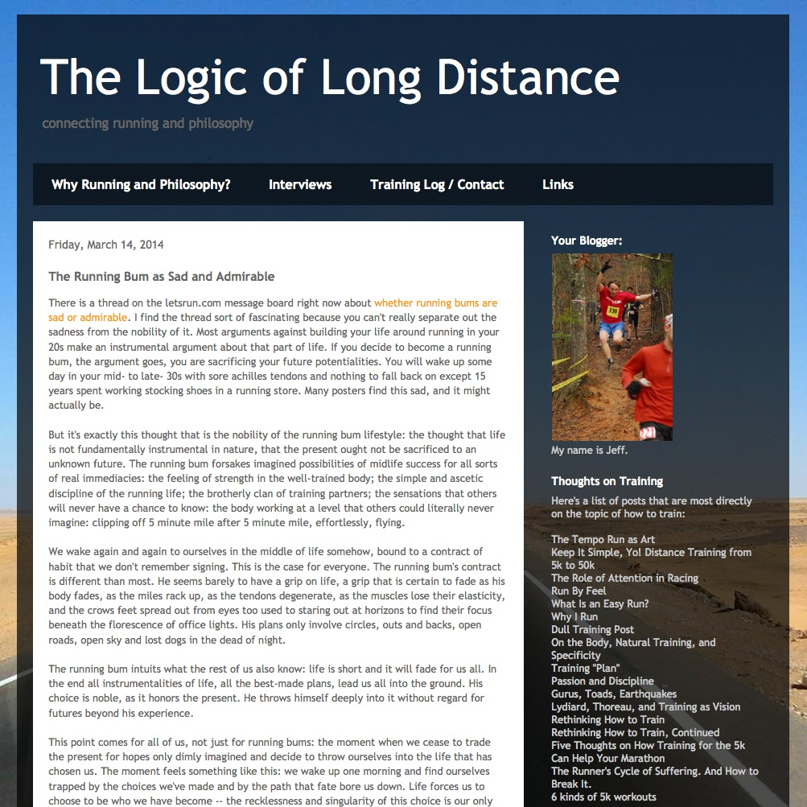

The Running Bum as Sad and Admirable
Perma🔗 (via @AlaskaJill)

I'm not a runner. It's never been something that has appealed to me. It's endless pain and torment. I feel no joy staring at a long road, down which I've "chosen" to run. All of this dislike aside, Jeff has a great line within this post:
We wake again and again to ourselves in the middle of life somehow, bound to a contract of habit that we don't remember signing. This is the case for everyone.
I took this on a more spiritual level than he intended, but it applies to everyone. At some point, I hope you live your life intentionally, and don't live it by default.
- Prior: The Roast in the Fridge
- Next: World Cup Stamps 2014